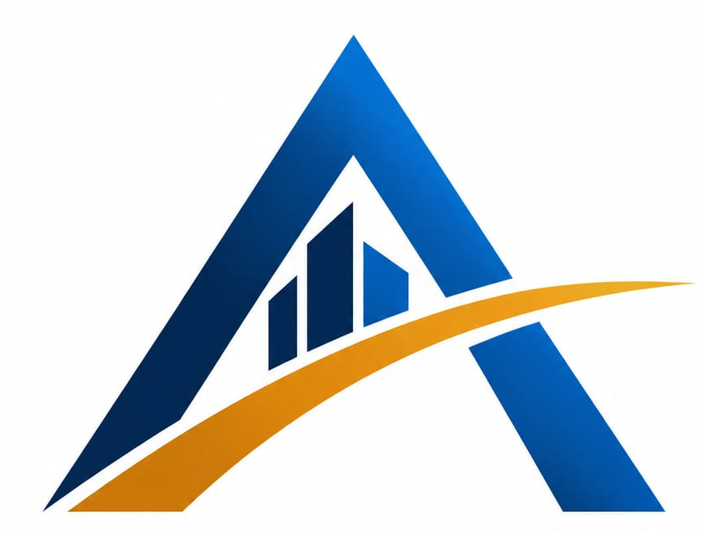

01 / COST PLANNING
RAB & Quantity Takeoff
Perhitungan volume, BOQ, estimasi biaya, dan struktur anggaran berdasarkan dokumen yang tersedia.
Bahas kebutuhan ↗
AURORASITEKENGINEERING & PROJECT CONTROLAURORASITEK membantu kontraktor dan pemilik proyek mengambil keputusan yang lebih baik melalui perencanaan biaya, pengendalian jadwal, dan monitoring progres berbasis data.
Mulai dari perhitungan biaya hingga laporan progres, layanan disusun agar informasi proyek lebih jelas dan mudah ditindaklanjuti.
Perhitungan volume, BOQ, estimasi biaya, dan struktur anggaran berdasarkan dokumen yang tersedia.
Bahas kebutuhan ↗Rencana waktu, target pekerjaan, milestone, dan pemantauan progres terhadap baseline.
Bahas kebutuhan ↗Bandingkan anggaran, biaya aktual, dan sisa anggaran untuk membantu pengambilan keputusan.
Bahas kebutuhan ↗Rekap progres, catatan kendala, dokumentasi lapangan, dan laporan proyek yang terstruktur.
Bahas kebutuhan ↗Selain cost control, AURORASITEK dapat membantu kebutuhan perencanaan bangunan. Lingkup setiap pekerjaan disepakati sesuai kebutuhan proyek dan tenaga ahli yang terlibat.
Diskusi kebutuhan ruang, kondisi lahan, fungsi bangunan, prioritas, dan batas anggaran sebelum desain dikembangkan.
Diskusikan kebutuhan ↗Koordinasi penyusunan gambar arsitektur dan dokumen teknis sesuai lingkup pekerjaan serta tenaga ahli yang dibutuhkan.
Diskusikan kebutuhan ↗Gambaran visual awal untuk membantu klien memahami bentuk, tampilan, material, dan suasana bangunan sebelum dibangun.
Diskusikan kebutuhan ↗Konsep tata ruang, fungsi, pencahayaan, dan pilihan material interior untuk rumah maupun ruang usaha.
Diskusikan kebutuhan ↗Identifikasi kebutuhan perubahan, lingkup pekerjaan, estimasi biaya, dan tahapan renovasi berdasarkan kondisi yang tersedia.
Diskusikan kebutuhan ↗Dukungan administrasi proyek, pemantauan progres, rekap biaya, dan koordinasi pelaksanaan sesuai kontrak layanan.
Diskusikan kebutuhan ↗Catatan: layanan perizinan PBG/SLF, analisis struktur, serta pekerjaan yang memerlukan tenaga ahli atau sertifikasi khusus dilakukan sesuai ketentuan dan melalui personel/mitra yang kompeten bila diperlukan.
Platform digital dirancang untuk menghubungkan rencana biaya, realisasi pengeluaran, jadwal, dan progres pekerjaan. Mulai dari satu proyek, lalu berkembang mengikuti kebutuhan tim.
Demo ini menggunakan data contoh dan belum menyimpan data ke server.
Proyek yang sehat membutuhkan informasi yang bisa dipahami, bukan sekadar angka yang dikumpulkan.
Alur kerja berangkat dari proses biaya, jadwal, dan progres yang digunakan dalam manajemen konstruksi.
Dokumen, angka, dan pembaruan proyek dirancang agar mudah ditinjau kembali oleh tim.
Pengembangan digital berfokus pada fungsi yang membantu pekerjaan, bukan sekadar menambah kerumitan.
Contoh berikut adalah skenario demonstrasi untuk menjelaskan cara kerja layanan, bukan klaim proyek klien yang telah dikerjakan.
Struktur BOQ, asumsi harga, dan ringkasan biaya awal.
Perbandingan target dan aktual serta catatan kendala.
Catatan pengeluaran dan evaluasi terhadap anggaran.
AURORASITEK dibangun dari ketertarikan pada manajemen konstruksi dan teknologi. Kami ingin membantu pelaku proyek memahami biaya, waktu, dan progres melalui pendekatan yang terstruktur dan solusi digital yang terus dikembangkan.
Setiap proyek memiliki konteks berbeda. Karena itu, ruang lingkup layanan, asumsi perhitungan, dan hasil pekerjaan perlu disepakati secara jelas sejak awal.
Mari diskusikan kebutuhan Anda ↗Ceritakan kebutuhan proyek Anda. Kami akan membantu mengidentifikasi layanan yang relevan sebagai langkah awal.